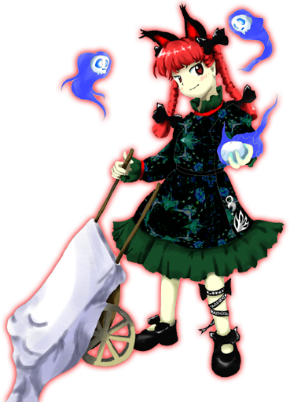

Rin (Orin) é frequentemente vista como:
Trabalhadora – dedica-se incansavelmente a coletar cadáveres e guiar espíritos para a fornalha.
Sociável e Animada – adora conversar, fofocar e possui uma personalidade muito enérgica e extrovertida.
Leal – faria absolutamente qualquer coisa para proteger sua mestra Satori e sua melhor amiga Utsuho.
Ela transmite a sensação de uma criatura alegre e amigável, o que cria um contraste bizarro e fascinante com o seu trabalho macabro de carregar mortos.
🧠 Esperteza e Sobrevivência
Diferente de sua amiga Utsuho, Orin é muito inteligente e perspicaz:
Sabe ler muito bem as intenções das pessoas
É rápida para agir quando percebe um perigo iminente
Consegue bolar planos e até pedir ajuda secretamente para evitar catástrofes
Sua mente ágil de felino a torna uma das habitantes mais conscientes do subsolo.
🐈⬛💀 Forma Humana e Felina
Como uma Kasha (gato monstro), ela transita entre duas formas:
Gosta de manter suas orelhas de gato mesmo na forma humana
Usa tranças com laços pretos marcantes
Pode se transformar em um gato preto comum para espionar ou se locomover discretamente
Seu comportamento mistura a graciosidade e a malícia natural dos felinos.
🪨 Vida no Subterrâneo
Orin passa a maior parte do tempo nas profundezas do inferno antigo:
Empurra seu carrinho de mão pelos cenários cheios de calor
Convive harmoniosamente no Palácio dos Espíritos da Terra
Mantém o equilíbrio dos espíritos ressentidos que alimentam as chamas
Ela não se incomoda com o ambiente fúnebre ou o calor extremo, tratando tudo com muita naturalidade e bom humor.
🤝 Relação com os outros
Orin interage constantemente com vivos e mortos:
É extremamente protetora com Utsuho Reiuji, agindo quase como uma irmã mais velha
Respeita profundamente Satori Komeiji por tê-la acolhido
Conversa com os espíritos que carrega como se fossem velhos conhecidos
Ela pode parecer assustadora por roubar cadáveres, mas não busca ferir ninguém sem motivo.
Condutora de Cadáveres do Inferno
Rin é uma Kasha encarregada de coletar corpos e transportá-los em seu carrinho de mão até o Inferno das Chamas Ardentes para regular o fogo subterrâneo.
Estimação de Satori
Ela gerencia os espíritos e os mortos como um dos animais de estimação mais confiáveis e antigos do Palácio dos Espíritos da Terra.
Manipulação de Cadáveres e Espíritos (Necromancia)
O principal poder de Rin envolve o controle sobre os mortos:
Pode animar corpos e usá-los como aliados em combate
Consegue se comunicar diretamente com espíritos e almas penadas
Rouba cadáveres frescos com extrema rapidez para aumentar seu poder
Sua presença impede que espíritos malignos saiam de controle no subsolo.
Controle de Chamas Fantasmagóricas
Ela pode gerar e manipular chamas espirituais verdes e vermelhas, que queimam a alma tanto quanto o corpo.
Voo
Orin consegue pairar e voar livremente, desviando de ataques com a agilidade e os reflexos aguçados de um gato.
Comunicação Felina
Ela consegue comandar e entender gatos comuns da superfície e do subsolo, usando-os para coletar informações.
Sua combinação de agilidade felina, controle sobre os mortos e um carrinho de mão implacável fazem dela uma oponente formidável e persistente.

Espécie: Kasha (um youkai felino que rouba cadáveres)
Título: Acidente de Trânsito do Inferno (Hell's Traffic Accident)